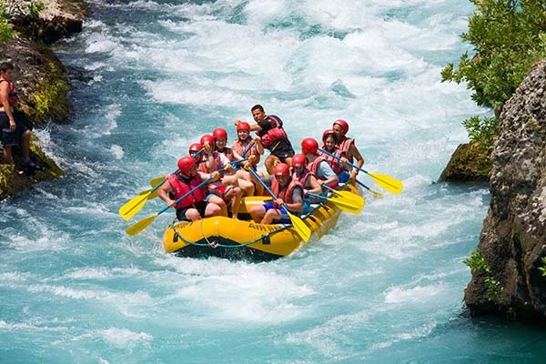
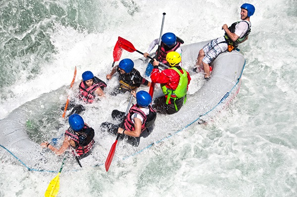
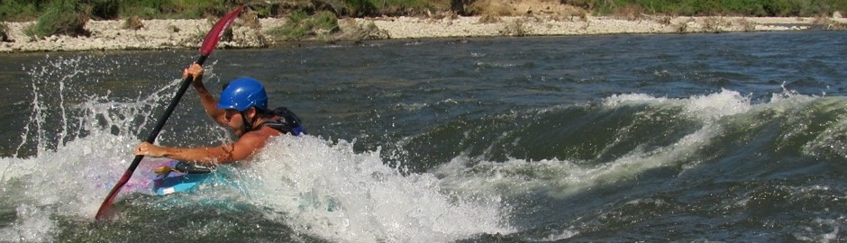

Raft options: Rafting consists of the descent of rivers in inflatable boats, where the members of the boat paddle under the command of an instructor, responsible for guiding the group during the course. Its practice implies very important concepts in the relationship between people, such as solidarity, unity, leadership, teamwork and sensory perception. Rafting derived from canoeing, it was discovered in 1869 when John Wesley Power, organized the first expedition on the Colorado River, USA, in rowboats. The difficulty of navigating a whitewater river (rapids) in wooden boats was what differentiated Rafting from canoeing, as the vessel evolved into rubber boats that did not break on the rocks, finally in 1909, the first commercial Rafting trip was made. In 1908, the self-bailer boat appeared (which contains a system for the water to exit through the bottom of the boat while maintaining the buoyancy) which, combined with new materials, gave impetus to the sport. See our options
| River Grande. | description. |
|---|---|
|  | Obladi oblada live goes on Blah lalala oh the live goes on.[[[[ See this great site and enjoy with us the adventure spirit with security or dour intructors. |
| Upside shadow water corridor. | description. |
|---|---|
|  |
Cowabanga!!!! This river is incredible the waters are violent and goes fast but no worries we will give you great safe and our instructor will give you the enjoins. |
|  |